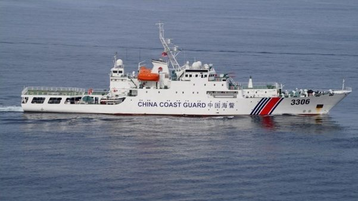

中 외교부 “군사력 발전, 어느 국가도 겨냥하지 않아”
중국 외교부가 자국의 군사력 발전은 특정 국가를 겨냥한 것이 아니라는 입장을 밝혔다. 방어적 국방 정책이라는 기존 기조를 재확인한 것으로, 역내 안보 논의 속 메시지로 읽힌다.
강패산 기자 · 2026.06.27
橋중국

중국 외교부가 ‘중국의 군사력 발전은 어느 국가도 겨냥하지 않는다’고 밝혔다고 환구망이 전했다. 정례 브리핑에서 나온 입장 표명이다.
광고 문의 · 300×250외교부는 중국의 국방 건설이 국가 주권과 안전, 발전 이익을 지키기 위한 것이며 방어적 성격을 띤다는 점을 강조했다. 이는 중국이 일관되게 밝혀 온 공식 입장이다.
역내에서는 군비 증강과 안보 협력을 둘러싼 다양한 시각이 존재한다. 각국은 서로의 의도를 확인하고 오해를 줄이기 위한 소통의 필요성을 함께 언급해 왔다.
華橋時報는 외교 당국의 입장 표명을 그 발언 그대로 전한다. 평가나 반박을 덧붙이기보다, 공식 입장이 무엇인지를 정확히 옮겨 독자가 스스로 판단하도록 한다.
안보 환경의 변화는 무역·인적 교류 등 일상 영역에도 간접적 영향을 준다. 화인 사회는 진영을 넘어 안정과 소통을 바라는 관점에서 이런 소식을 살핀다.